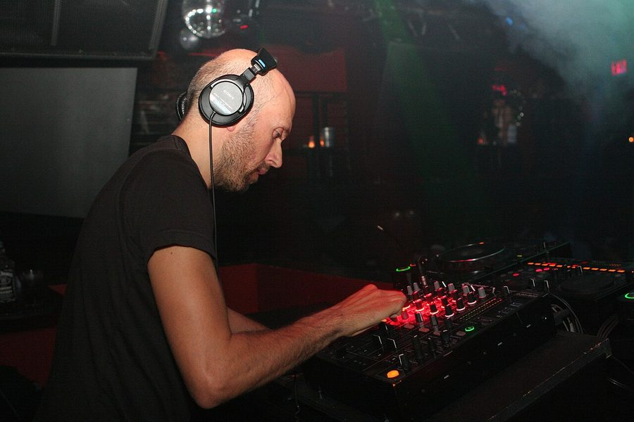

Lee Burridge back in Australia this weekend



Back in the country after smashing crowds only last September on the back of his Balance release and further cementing his status as a regular visitor to our shores – he’s also one of the most consistent names in underground dance music. House, techno, minimal you name it… Just don’t try and button him down, because many have failed and many will fail again. All you can do is just listen and dance…
Kicking his career off in the blossoming Hong Kong club scene in the early 90s (where he was responsible for driving that city’s underground scene), it was back home in the UK where he really took it to the next level when Sasha and Craig Richards offered to help him launch his career, creating the legendary Tyrant nights. Later taking the reigns on one of Global Underground’s NuBreed series, he’s been a mainstay ever since and last year showed he’s still got the chops with his Balance compilation.
Catch Lee Burridge when he returns over the next few weeks…
9th May – Sydney, Sweetchilli at Civic Underground
10th May, Melbourne, Sunny at Brown Alley
16th May – Perth, Ambar
18th May – Brisbane, Sunday Roast at Empire